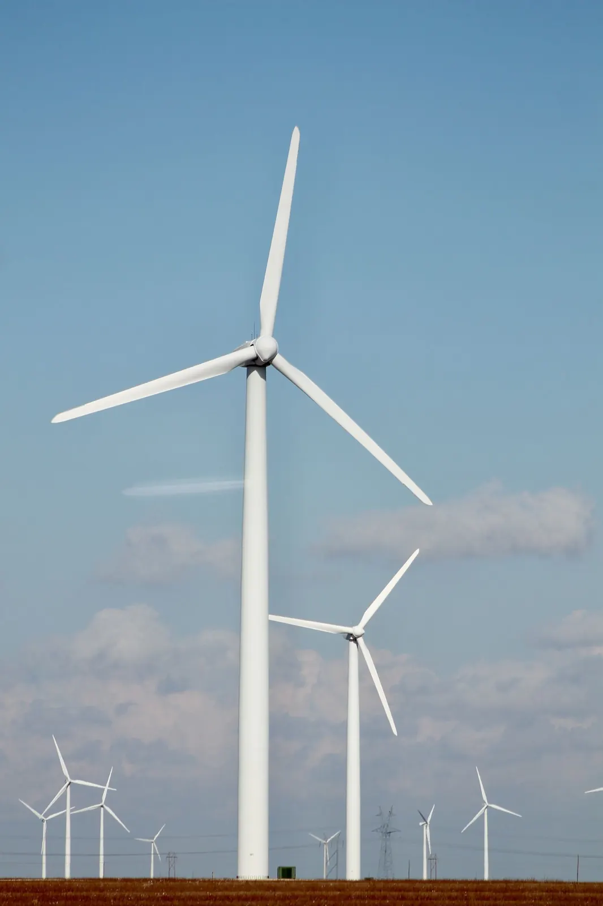

Infraestrutura e energia
Projetos de geração, transmissão, saneamento e logística envolvem contratos longos, concessões, licenças e relacionamento com agências reguladoras.

Características jurídicas
O que marca o setor
- Contratos de construção e fornecimento de equipamentos
- Concessões e parcerias público-privadas
- Licenciamento ambiental de projetos
- Financiamento de projetos e garantias
Esses pontos orientam a forma como as áreas do escritório se organizam para atender empresas do setor.
Temas regulatórios
Normas e órgãos acompanhados
- Regulação da ANEEL e do setor elétrico
- Lei de Concessões (Lei 8.987/1995) e PPPs (Lei 11.079/2004)
- Nova Lei de Licitações (Lei 14.133/2021)
- Marco do saneamento (Lei 14.026/2020)
- Geração distribuída (Lei 14.300/2022)
Áreas relacionadas
Áreas mais acionadas no setor
O grupo setorial reúne advogados destas áreas.
Equipe
Advogados do grupo setorial
Perfis de exemplo.

Marcelo Viana
SócioContratos empresariais · Contencioso cível e arbitragem
André Fontes
SócioContencioso cível e arbitragemBeatriz Nogueira
SóciaImobiliário empresarial
Rafael Moretti
SócioCompliance e investigações · Contencioso cível e arbitragemSérgio Kalil
Coordenador de contratosContratos empresariaisVinícius Lima
AdvogadoImobiliário empresarialDaniel Farah
AdvogadoCompliance e investigaçõesInsights
Publicações relacionadas
Conteúdo informativo sobre temas do setor.

Programa de integridade: o que torna um canal de denúncias efetivo
A regulamentação da Lei Anticorrupção lista parâmetros para avaliar programas de integridade. O canal de denúncias é um deles e precisa funcionar na prática.

Locação comercial: requisitos e janela da ação renovatória
A Lei do Inquilinato protege o ponto comercial, mas a renovação compulsória depende de requisitos e de um período certo para propor a ação.

Cédula de Produto Rural: pontos de atenção na emissão e no registro
A CPR é um dos principais instrumentos de financiamento do agronegócio. Mudanças recentes na lei ampliaram seu uso e reforçaram a exigência de registro.